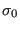

*DEFORMATION PLASTICITY
Keyword type: model definition, material
This option defines the elasto-plastic behavior of a material by means of the generalized Ramberg-Osgood law. The one-dimensional model takes the form:
where  is the logarithmic strain and
is the logarithmic strain and  the Cauchy stress. In the present implementation, the Eulerian strain is used, which is very similar to the logarithmic strain (about 1.3 % difference dat 20 % engineering strain). All coefficients may be temperature dependent.
the Cauchy stress. In the present implementation, the Eulerian strain is used, which is very similar to the logarithmic strain (about 1.3 % difference dat 20 % engineering strain). All coefficients may be temperature dependent.
First line:
Following line:
- Young's modulus (E).
- Poisson's ratio (
 ).
). - Yield stress ()
- Exponent (n).
- Yield offset (
 ).
). - Temperature.
Repeat this line if needed to define complete temperature dependence.
Example:
*DEFORMATION PLASTICITY
210000.,.3,800.,12.,0.4
defines a Ramberg-Osgood law. No temperature dependence is introduced.
Example files: beampl.